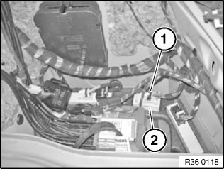
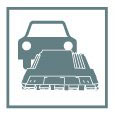

Tire Pressure Module: Service and Repair
36 11 105 Removing and installing (replacing) RDC control unitImportant!
Read and comply with notes on protection against electrostatic discharge (ESD protection).
Necessary preliminary tasks:
^ Remove right luggage compartment trim panel

Disconnect plug connection (1).
Pull out control unit (2) towards top.

Replacement:
- Carry out programming/encoding